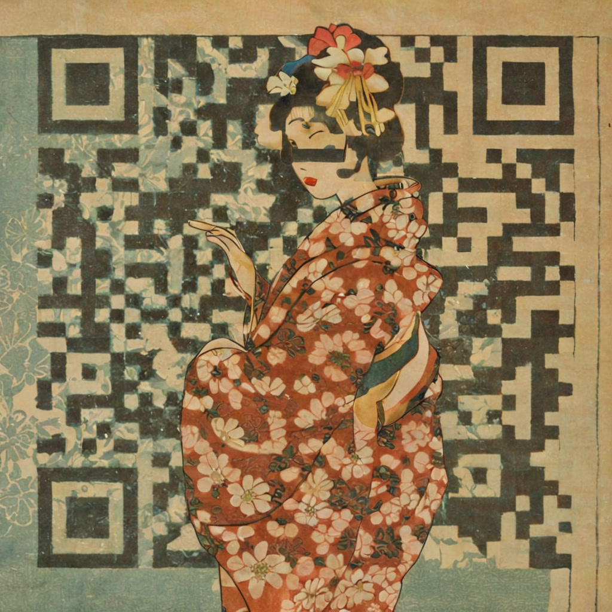

Real-time AI × Dance
A live camera feed of my own dancing, regenerated frame by frame into something else — while I am still dancing. Nothing here is post-production. The generation runs in the same moment as the movement.
01
A webcam watches me dance. StreamDiffusion, driven from TouchDesigner, regenerates every frame into a different body — a different face, a different material, a different creature — and sends it straight back to the screen.
The hard part was never the image. It was the latency. A generated frame that arrives late is no longer my movement, it is a memory of it. Tuning the pipeline until the output lands close enough to follow my own body is what makes this feel alive instead of rendered.
The clip here is it running in the room — one laptop, one camera, no render queue.

02
Built in ComfyUI. The checkered pattern behind the figure is not decoration — it is a real QR code. A QR-conditioned ControlNet holds the light and dark cells in place while the diffusion model paints an ukiyo-e style print on top of them: aged paper, a woman in a floral kimono, a flower in her hair.
The interesting constraint is that the image has two jobs at once. It has to read as a picture to a person, and as data to a phone camera. Push the style too far and the code dies; hold back and it is just a QR code with a filter on it. The whole craft is in that margin.
Same instinct as the piece above: give a machine a structure it has to respect, then see how far the image can travel without breaking it.
A webcam, a projector, and a browser — both of these were written with Claude Code. Nothing is installed on the wall side. The room is the screen and the body is the controller.
Strings of light are projected onto a wall. A camera watches the hand, and the moment a finger crosses a string, the string bends away from it and sounds a note — the bend you can see is the note being played. There is no instrument in the room. Only light, a wall, and a hand.
The projection draws your own skeleton back onto you — wrist, elbow, shoulder, tracked live. Small glowing characters drift across the cloth, and when a hand reaches one it flips green. You are holding nothing: the tracking of the body is the entire input.
Point a phone at a printed marker and a 3D character I built starts dancing on top of it. Runs in the browser — no app to install.
A LINE agent that runs the staff schedule for a bar in Fukuoka. It collects availability, builds the roster automatically, and sends it out. In real weekly use.
A mind map built for the way my own head branches — made to spread thoughts out without losing any of them.
Starts at why, then walks down through what to build and how to solve it — one layer at a time.
Weather, a weekly timeline and long-range bars on one screen. Existing calendars never fit my head, so I rebuilt one that does.
I am a b-boy who builds things. Breakdance, 3D, and writing the code myself — not many people are standing in all three places at once, so that intersection is what I work from.
What I am actually good at is spotting a specific annoyance in front of a specific person and having something running the same day. I would rather move a rough version and fix it by touching it than design the perfect one on paper.
Everything here was built for a real room — a bar, a studio, a massage clinic — and used by real people. That is the part I care about.